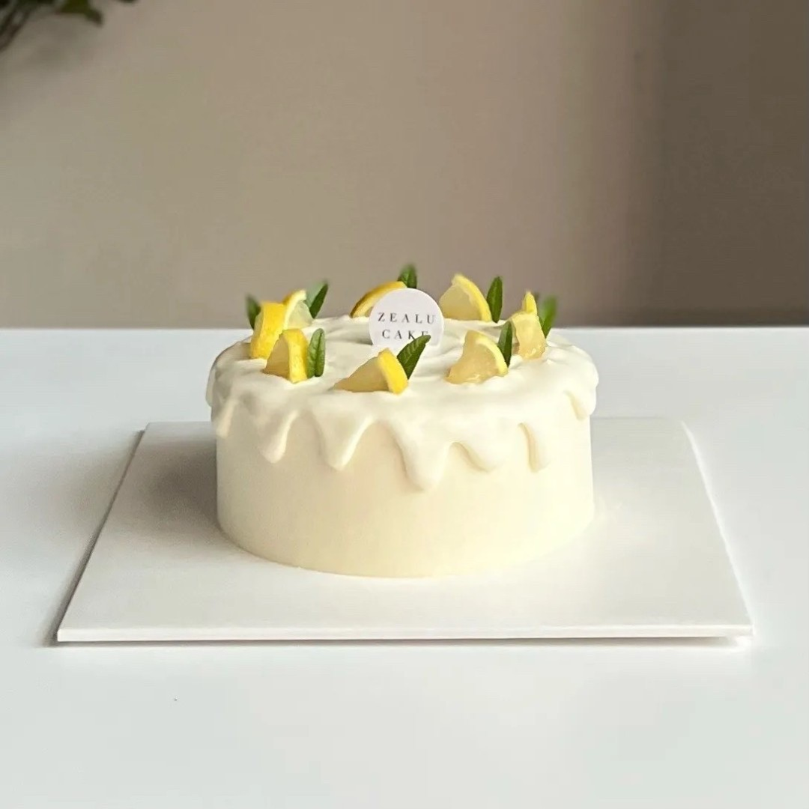

夏日果香蛋糕
這款蛋糕以清爽的夏季水果為主要配料， 例如草莓、藍莓、覆盆子等，搭配輕盈的蛋糕體，是夏天享用的完美選擇。
NT$ 360
（六吋）
經典法式千層蛋糕
這種蛋糕以法式傳統製作， 以多層酥脆的酥皮與香濃的奶油酥層疊加而成， 口感濃厚，帶有深深的奶油香氣。
NT$ 400
（六吋）

榛果巧克力蛋糕
這款蛋糕以頂級巧克力和香濃榛果醬製作， 口感濕潤柔滑，榛果的香氣與巧克力的濃郁相得益彰。
NT$ 300
（六吋）

檸檬戚風蛋糕
這種蛋糕有著清新的檸檬香氣和輕盈的戚風質地。 它常常作為夏日的甜點，帶有一絲微酸，清爽怡人。
NT$ 380
（六吋）